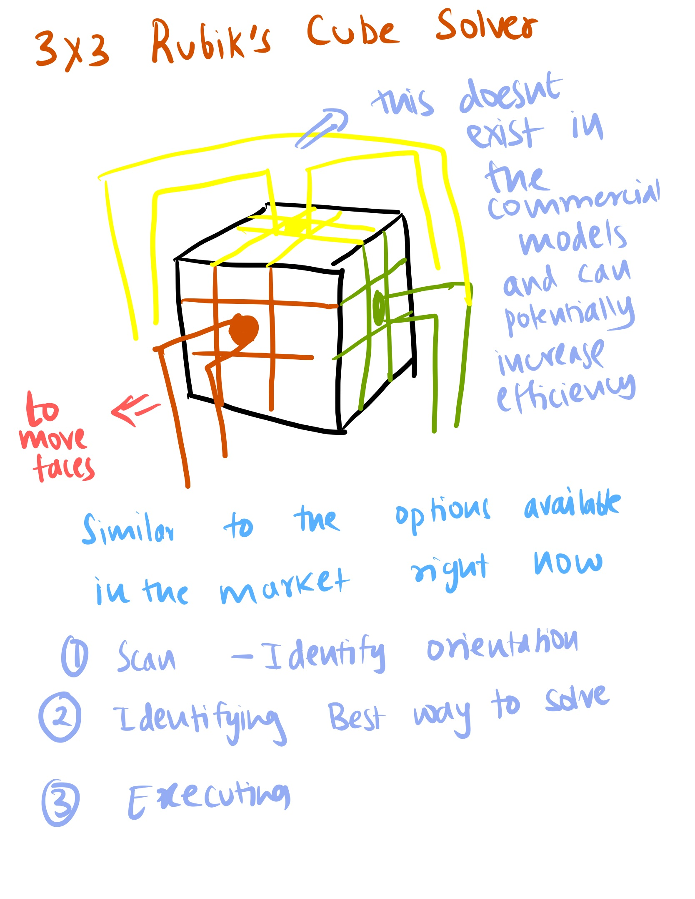

<div class="textcontainer">
<br></br>
<h3>Week 1: Final Project Proposal</h3>
<p class = "margin"></p>
Here are at most 3 ideas for my final project
<p class = "margin"></p>
<h4>Idea 1 : Idea 1</h4>
<p class = "margin"></p>
Idea 1
<p class = "margin"></p>
<h4>Idea 2: Origami Folding Robot</h4>
<p class = "margin"></p>
I’ve been speedcubing for the past five years, and I think it would be really cool to design and build a robot that can solve a 3×3×3 cube on its own. Although such robots already exist, creating one myself would strengthen my skills in fabrication and automation. The project would involve using motors to control the cube’s sides, a camera to recognize the color patterns on each face, and an algorithm capable of interpreting the cube’s state and generating a solution. I could either build a robot that solves the cube from the outside or modify a 3×3 by embedding the mechanics inside it. <a href="https://youtube.com/playlist?list=PLcLQKnSThH3i4e-X5_wamxDpI9pKeUPCU&si=8GJEYQFmOltpyOtd">This is a link to some existing models.</a>
<br>

<p class = "margin"></p>
<h4>Idea 3: 3x3 Rubik's Cube Solver</h4>
<p class = "margin"></p>
I’ve been speedcubing for the past five years, and I think it would be really cool to design and build a robot that can solve a 3×3×3 cube on its own. Although such robots already exist, creating one myself would strengthen my skills in fabrication and automation. The project would involve using motors to control the cube’s sides, a camera to recognize the color patterns on each face, and an algorithm capable of interpreting the cube’s state and generating a solution. I could either build a robot that solves the cube from the outside or modify a 3×3 by embedding the mechanics inside it. <a href="https://youtube.com/playlist?list=PLcLQKnSThH3iW3rEblT7eL7Mdph1ytNGB&si=mTTZg9rFX3c3gO9e">This is a link to some existing models.</a>
<br>
</div>